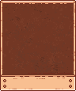
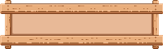

<ion-content>
  <h1>Garden Map</h1>
  <div class="map-container">
    
    <ng-container *ngFor="let plant of plants; let i = index">
      <!--loop-->
      <div class="map-pin" [ngStyle]="pinPos(plant)" (click)="updateChartData(i)">
        <!--pin html-->
        
        <div class="pin-popup">
          <p>{{ plant.plantName }}</p>
          <!--<ion-button size="small" (click)="openPlant(i)" class="popup">View</ion-button>-->
        </div>
      </div>
    </ng-container>
  </div>
  <a href="/tabs/database" class="databaseButton">
    <button>Database</button>
  </a>
  
  <canvas #plantGraph height="90"></canvas>
</ion-content>